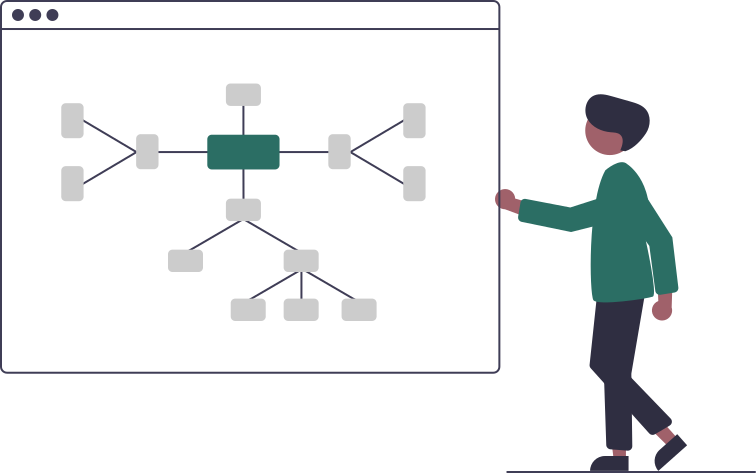
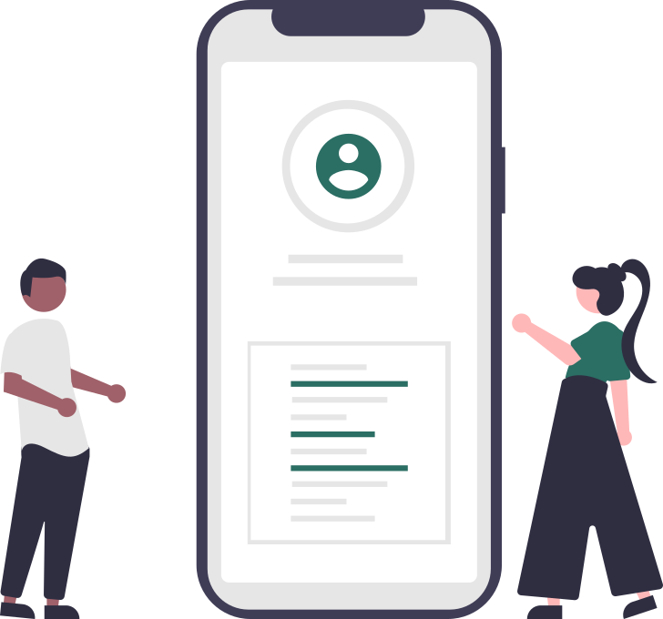
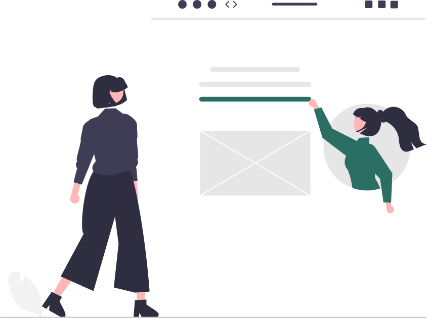

HR & Employee Records
Mapping employee data and org structures into Odoo HR workflows.
I lead end-to-end HRIS implementations built on Odoo — from process mapping and configuration through go-live, data migration, and long-term support — for clients across education, logistics, and other industries.
A technical lead who moved from frontend development into ERP systems work, now responsible for the full lifecycle of HRIS delivery — mapping HR processes into system workflows, migrating and upgrading Odoo instances without disrupting payroll, integrating biometrics and third-party APIs, and training the HR teams who use what gets built. Promoted from Technical Consultant to Tech Lead in 20 months at Toolkit Inc.
Core capabilities built through end-to-end HRIS implementations on Odoo — from process mapping and configuration through migration, integration, and support.
Mapping employee data and org structures into Odoo HR workflows.
Configuring payroll rules and migrating pay cycles with zero disruption.
Building attendance, time tracking, and leave workflows around client policy.
Syncing biometric devices and attendance hardware with Odoo.
Leading upgrades from Odoo 9 through Odoo 19, preserving data integrity.
Building custom modules, server actions, and SQL solutions for client needs.
Connecting Odoo to external systems via API for client-specific requirements.
Managing databases and servers across client environments for uptime and security.
How I lead an HRIS implementation, from first workshop to steady-state support.



Self-directed projects from earlier coursework and independent learning.